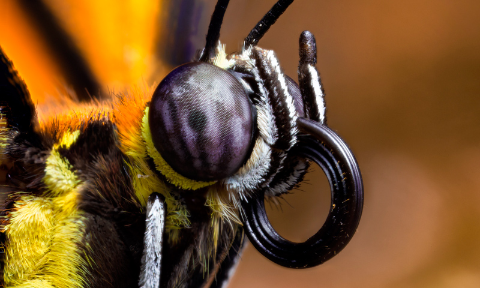

La cabeza de la mariposa alberga los principales órganos sensoriales y de alimentación. En ella se encuentran los ojos compuestos, las antenas y la probóscide, o espiritrompa, que es un tubo largo y hueco que utilizan para succionar líquidos.
- Ojos compuestos: Le permiten una visión amplia y detectar movimiento, aunque sin detalles finos a larga distancia.
- Antenas: Detectan olores, sonidos y vibraciones. Son esenciales para la búsqueda de alimento, pareja y orientación ambiental.
- Probóscide: Tubo largo enrollado que se extiende para succionar néctar de flores. Se guarda bajo la cabeza cuando no se usa.
- Palpos labiales: Apéndices sensoriales que detectan el sabor y textura de los alimentos antes de ingerirlos.
En resumen, la cabeza de la mariposa es una estructura crucial para su supervivencia, ya que le permite interactuar con su entorno a través de sus sentidos y obtener alimento.